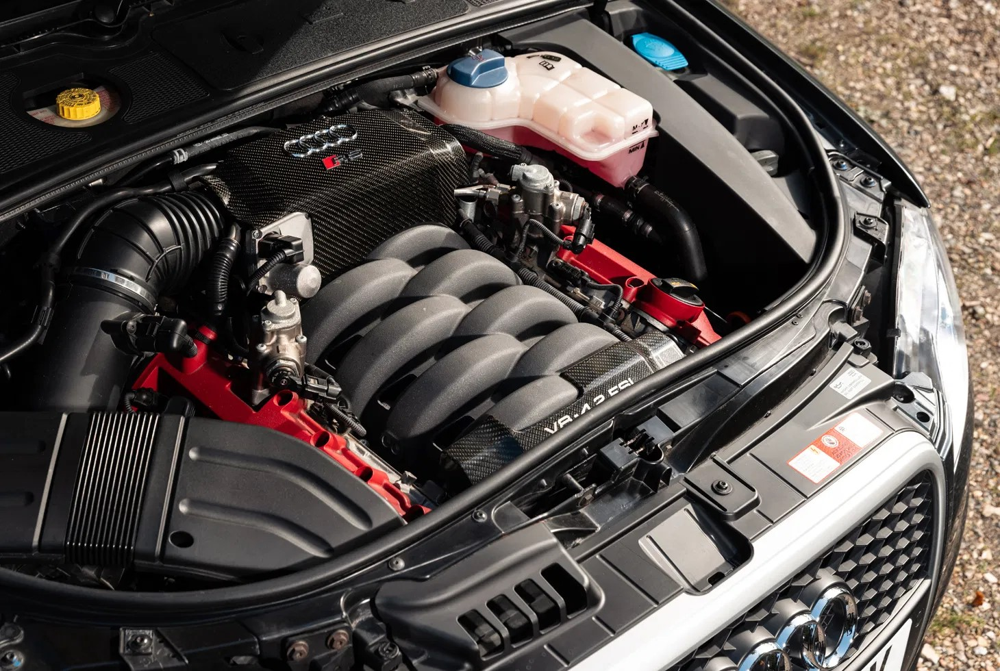

AUDI RS4 B7(2006-2008)
The Audi RS4 B7 is one of the most iconic performance cars Audi ever made — a high-revving, four-door performance saloon (and later wagon and convertible) that blended everyday usability with genuine supercar-level power and excitement. It’s often celebrated by enthusiasts as a high point in the RS line thanks to its naturally aspirated V8 and manual gearbox.
General Overview
- Generation: 3rd-gen RS4 (internally known as B7; based on the Audi A4 B7 platform).
- Production Years: Roughly mid-2005 to 2008 (saloon and Avant), with the Cabriolet made until early 2009.
Body Styles:
- Saloon (sedan) – classic four-door.
- Avant (estate/wagon) – practical yet fast, a beloved choice among fans.
- Cabriolet (convertible) – rarer and heavier, but stylish.
Engine & Performance
- Engine: 4.2-litre naturally aspirated V8 with 32 valves and Fuel Stratified Injection (FSI).
- ower: ~420 PS (≈414 bhp / 309 kW) at ~7,800 rpm
- Torque: ~430 Nm (≈317 lb-ft) at ~5,500 rpm
- Transmission: 6-speed manual only — a big part of the RS4’s enthusiast appeal.
- Drivetrain: Quattro permanent all-wheel drive with Torsen centre differential.
- 0–60 mph / 0–100 km/h: ~4.6–4.8 sec depending on body style and source.
- Top Speed: Electronically limited to ~155 mph (250 km/h); de-restricted speeds much higher.
